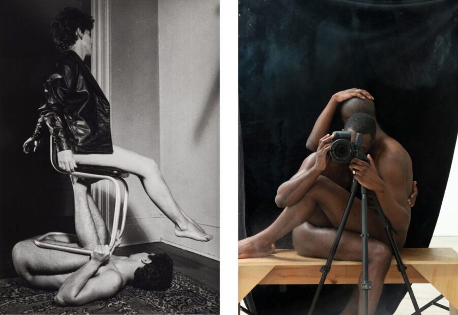

Jimmy DeSana, Paul Mpagi Sepuya
DOCUMENT Chicago is delighted to present a two-person exhibition of photographs by Jimmy DeSana and Paul Mpagi Sepuya. Opening on January 9, the exhibition will remain on view through March 21, 2026.
This intergenerational dialogue between the work of Jimmy DeSana and Paul Mpagi Sepuya unfolds as a set of carefully matched pairings. Both artists use photography to engage with queer bodies and the politics of representation, implicating the viewer as much as any figure who appears in the frame. Closely associated with New York City’s No Wave and downtown art scenes in the late 1970s and employing a rich array of photographic processes, DeSana drew on Surrealism in presenting bodies in confusing entanglement with everyday objects as well as one another. Anticipating the sexual anxieties of the imminent AIDS crisis, he infused queer erotics with equal parts absurdity and dread. Beginning his career in the mid-2000s, Sepuya’s work comes from his intimate involvement and collaboration with queer communities on both U.S. coasts. The desiring gaze can only take in Sepuya’s bodies via fragmentation, mirroring or the clever reproduction of his previous photographs; effects meticulously produced by Sepuya in the studio rather than by any digital manipulation. Side by side, DeSana and Sepuya remind us that queer aesthetics—much like queer liberation—is a continual process, never far from the lived, corporeal world.
Jimmy DeSana (b. 1949, Detroit, MI – d. 1990, New York, NY), a key figure in the New York downtown scene of the 1970s and 80s, created a body of photography that evinces a singular style typified by concealed figures, saturated colors, and surreal mise-en-scène, with subject matter that index the artist’s fascination with American suburbia and queer fetish subculture in equal measure. Recent solo and two-person exhibitions include KW Institute for Contemporary Art, Berlin, 2024; Brooklyn Museum, New York, 2023; Griffin Art Projects, Vancouver, Canada, 2020; and Pioneer Works, Brooklyn, NY, 2016. DeSana’s work can be found in public collections including the Institute of Contemporary Art, Boston, MA; the Metropolitan Museum of Art, New York; the Art Institute of Chicago, IL; Museum of Contemporary Art Chicago, IL; Museum of Fine Arts Houston, TX; the Museum of Modern Art, New York, NY; and the Whitney Museum of American Art, New York, NY.
Paul Mpagi Sepuya (b. 1982, San Bernardino, CA) is an artist working in photography whose projects weave together histories and possibilities of portraiture, queer and homoerotic networks of production and collaboration, and the material and conceptual potential of blackness at the heart of the medium. Recent institutional solo exhibitions include Nottingham Contemporary, UK (2023); Deichtorhallen, Hamburg, Germany (2022); Bemis Center for Contemporary Arts, Omaha, NE (2020); CAM St. Louis, MO (2020); and a project for the 2019 Whitney Biennial. The artist’s largest monograph to date was published by Aperture in 2024. Works by Sepuya are held in the collections of the Baltimore Museum of Art, the Getty and Guggenheim Museums, LACMA, MoMA, SFMoMA, the Studio Museum in Harlem, and the Whitney Museum of American Art, among others. A survey exhibition will open at Fotomuseum Winterthur, Switzerland in February and travel to Sprengel Museum Hannover Germany later in 2026.